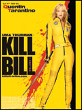
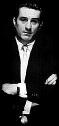

| Minority Report (Spielberg, Steven) | |
| Un homme est victime d'une machination. Il est pris au piège d'un système qu'il a l'habitude de contrôler. | |
| Kill Bill (Tarantino, Quentin) | |
|  | Une femme se venge des personnes qui ont voulu l'assassiner. |
| Casino (Scorsese, Martin) | |
|  | Le monde de la mafia italienne mêlé à celui des casinos... |
| Les affranchis (Scorsese, Martin) | |
| Inspiré d'un fait réel : histoire de mafia italienne. | |